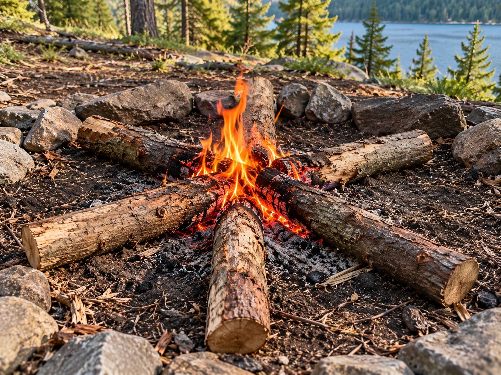

Teepee Fire
A cone-shaped fire structure that allows air to move between the sticks.
Learn More →Choose a fire type to learn about its structure, materials, and safety.
A cone-shaped fire structure that allows air to move between the sticks.
Learn More →
A fire structure made by stacking wood in alternating layers.
Learn More →
A fire structure where small sticks lean against a larger piece of wood.
Learn More →
A fire where long logs point toward a small burning center.
Learn More →